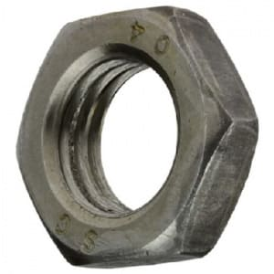

DIN 936 Гайка низкая шестигранная
Стандарт
DIN 936
ISO
ISO 4035
Цена от
0,18 ₽
Размерный ряд
М52
Гайки DIN, ГОСТ » DIN 936 / ISO 4035 Гайки низкие шестигранные диаметр от М2 до М52
Варианты и размеры (32)
| Наименование | Размер | Длина, мм | Материал | Покрытие | Цена |
|---|---|---|---|---|---|
| DIN 936 Гайка низкая шестигранная M10 L=6мм | M10 | 6 | 0,22 ₽ | ||
| DIN 936 Гайка низкая шестигранная M12 L=7мм | M12 | 7 | 0,26 ₽ | ||
| DIN 936 Гайка низкая шестигранная M14 L=8мм | M14 | 8 | 0,29 ₽ | ||
| DIN 936 Гайка низкая шестигранная M16 L=8мм | M16 | 8 | 0,32 ₽ | ||
| DIN 936 Гайка низкая шестигранная M18 L=9мм | M18 | 9 | 0,35 ₽ | ||
| DIN 936 Гайка низкая шестигранная M2 L=4мм | M2 | 4 | 0,11 ₽ | ||
| DIN 936 Гайка низкая шестигранная M2.5 L=5мм | M2.5 | 5 | 0,12 ₽ | ||
| DIN 936 Гайка низкая шестигранная M20 L=9мм | M20 | 9 | 0,38 ₽ | ||
| DIN 936 Гайка низкая шестигранная M22 L=10мм | M22 | 10 | 0,42 ₽ | ||
| DIN 936 Гайка низкая шестигранная M24 L=10мм | M24 | 10 | 0,45 ₽ | ||
| DIN 936 Гайка низкая шестигранная M26 L=12мм | M26 | 12 | 0,49 ₽ | ||
| DIN 936 Гайка низкая шестигранная M27 L=12мм | M27 | 12 | 0,50 ₽ | ||
| DIN 936 Гайка низкая шестигранная M28 L=12мм | M28 | 12 | 0,52 ₽ | ||
| DIN 936 Гайка низкая шестигранная M3 L=8мм | M3 | 8 | 0,13 ₽ | ||
| DIN 936 Гайка низкая шестигранная M3.5 L=5мм | M3.5 | 5 | 0,13 ₽ | ||
| DIN 936 Гайка низкая шестигранная M30 L=12мм | M30 | 12 | 0,55 ₽ | ||
| DIN 936 Гайка низкая шестигранная M32 L=14мм | M32 | 14 | 0,60 ₽ | ||
| DIN 936 Гайка низкая шестигранная M33 L=14мм | M33 | 14 | 0,61 ₽ | ||
| DIN 936 Гайка низкая шестигранная M35 L=14мм | M35 | 14 | 0,65 ₽ | ||
| DIN 936 Гайка низкая шестигранная M36 L=14мм | M36 | 14 | 0,66 ₽ | ||
| DIN 936 Гайка низкая шестигранная M38 L=16мм | M38 | 16 | 0,71 ₽ | ||
| DIN 936 Гайка низкая шестигранная M39 L=16мм | M39 | 16 | 0,73 ₽ | ||
| DIN 936 Гайка низкая шестигранная M4 L=2мм | M4 | 2 | 0,13 ₽ | ||
| DIN 936 Гайка низкая шестигранная M40 L=16мм | M40 | 16 | 0,75 ₽ | ||
| DIN 936 Гайка низкая шестигранная M42 L=16мм | M42 | 16 | 0,78 ₽ | ||
| DIN 936 Гайка низкая шестигранная M45 L=18мм | M45 | 18 | 0,85 ₽ | ||
| DIN 936 Гайка низкая шестигранная M48 L=18мм | M48 | 18 | 0,90 ₽ | ||
| DIN 936 Гайка низкая шестигранная M5 L=2мм | M5 | 2 | 0,14 ₽ | ||
| DIN 936 Гайка низкая шестигранная M50 L=20мм | M50 | 20 | 0,96 ₽ | ||
| DIN 936 Гайка низкая шестигранная M52 L=20мм | M52 | 20 | 0,99 ₽ | ||
| DIN 936 Гайка низкая шестигранная M6 L=3мм | M6 | 3 | 0,16 ₽ | ||
| DIN 936 Гайка низкая шестигранная M8 L=5мм | M8 | 5 | 0,19 ₽ |